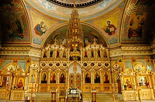
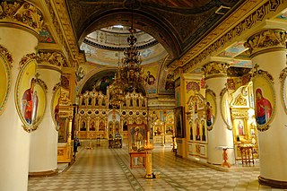
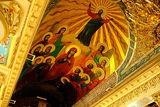

Свернуть
Александро-Невский собор— православный храм в Ижевске. Принадлежит к Ижевской епархии Русской православной церкви. В 1994—2017 годах был кафедральным собором епархии.
Храм построен в 1823 году по образцу Андреевского собора в Кронштадте (автор проекта — архитектор Андреян Захаров). Изначально планировался, как центральный храм Ижевского завода. В 1929 году храм был разграблен и закрыт, позднее в нём работал кинотеатр «Колосс» В 1990 году при активном участии епископа Палладия (был настоятелем с 1990 по 1992 год) возвращён РПЦ.
В результате пожара 1810 года были уничтожены значительная часть города и главный в то время храм — церковь Ильи Пророка, встал вопрос о строительстве нового храма. Уже на следующий год заводской архитектор Семён Дудин выполнил проект монументального собора с тремя престолами и тремя колокольнями, но проект был отвергнут из-за излишней пышности и дороговизны. Взамен отвергнутого проекта петербургские власти рекомендовали взять в качестве образца проект Андреевского собора в Кронштадте. Дудин откорректировал чертежи, исходя из местных условий, например, заменил гранит на заводское литьё, а также упростил отдельные архитектурные формы.
Первый проект, разработанный Дудиным на основе захаровских чертежей. Разрез. 1819 г.
Строительство завершилось в 1823 году. Центральный придел был освящён в честь святого благоверного князя Александра Невского, южный предел — в честь святой великомученицы Екатерины, северный — в честь Казанской иконы Божией Матери, нижний, «пещерный» храм — в честь святых мучеников Власия и Модеста.
В 1824, проезжая через Ижевск, собор посетил император Александр I. В 1871 году при Соборе открылось попечительство, которое занималось просветительской благотворительной работой. С 1875 года при храме действовала воскресная школа. Позднее при соборе образованы и другие школы, благотворительные комиссии и общество трезвости.
| Интерьеры | |||
|  |  |  | |